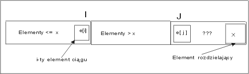

| « poprzedni punkt | nastêpny punkt » |
Przedstawiony w poprzednim punkcie problem jest szczególnym przypadkiem nastêpuj±cego zadania:
Dany jest ci±g, którego elementy nale¿± do pewnej przestrzeni liniowo uporz±dkowanej. Niech np. elem bêdzie typem elementów tego ci±gu. Znale¼æ k-ty najwiêkszy element tego ci±gu, tzn. element, który ma dok³adnie k-1 wiêkszych od siebie elementów.
Przyk³ad 6.1
Dla ci±gu 3,5,20,7,11,60,32,19,8, drugi najwiêkszy element to 32, trzeci najwiêkszy to 20, a czwarty najwiêkszy element to 19.J
Niech dany ci±g bêdzie reprezentowany przez tablicê o elementach e[1],...,e[n]. Specyfikacja naszego zadnia mo¿e mieæ nastêpuj±c± postaæ:
wp ={n ³k >0, e[i] ¹ e[j] dla i ¹ j}
wk = {istnieje dok³adnie k-1 elementów e[j1],..., e[jk-1] takich, ¿e result < e[j] dla j= j1,..., jk-1.}.
Najprostszy algorytm rozwi±zania tego zadania polega na k krotnym wyszukiwaniu maksimum. W przedstawionym tu algorytmie, znalezione kolejno elementy maksymalne s± przestawiane na kolejne, pocz±tkowe pozycje ci±gu. U¿yli¶my w tym celu operacji swap(e[i], e[j]), która powoduje zamianê itej i jtej pozycji ci±gu. Dok³adniej swap(x,y) = {z := x; x := y; y := z}.
| K_ty{ | |||
| j := 1; | |||
| while (j £ k) do | //e[1]>...>e[j-1], e[j-1]= max{e[j-1],...,e[n]} | ||
| x := j; i := j +1; | //x ma byæ pozycj± elementu najwiêkszego w¶ród e[j],...,e[n] | ||
| while (i<n+1) do | // szukamy maksimum w¶ród elementów na pozycjach >j | ||
| if e[i]> e[x] then x := i fi; | |||
| i := i+1; | |||
| od; | e[x] = max {e[j],...,e[n]} | ||
| swap(e[j],e[x]); | e[1]>...>e[j-1]>e[j], e[j] = max{e[j],...,e[n]} | ||
| j := j + 1; | e[1]>...>e[j-1], e[j-1] = max{e[j-1],...,e[n]} | ||
| od; | // j = k+1 | ||
| result := e[k] | //e[1]>...>e[k], e[k] = max{e[k],...,e[n]} | ||
| } |
Nie bêdziemy tu dok³adniej analizowaæ poprawno¶ci tego algorytmu. Komentarze umieszczone obok instrukcji, pozwalaj± uzasadniæ niezmiennik pêtli, który mówi, ¿e e[j-1] jest (j-1)szym co do wielko¶ci elementem rozwa¿anego ci±gu.
Koszt tego algorytmu, mierzony liczb± wykonanych porównañ elementów, to suma kosztów zwi±zanych z k krotnym wyszukiwaniem maksimum w coraz krótszych ci±gach:
(n-1) + (n-2)+ (n-3) +... + (n-k) = k*n - k(k+1)/2.
Je¶li k jest ma³± sta³±, to koszt tego algorytmu jest liniowy. Je¶li natomiast k= Q(n), to sk³adnik k*n spowoduje, ¿e funkcja kosztu algorytmu bêdzie ros³a ze wzrostem n, tak jak funkcja kwadratowa.
Czy mo¿na rozwi±zaæ problem k-tego co do wielko¶ci elementu taniej, wykonuj±c mniejsz± liczbê porównañ? C.A.R.Hoare zaproponowa³ algorytm wykorzystuj±cy zasadê "dziel i zwyciê¿aj".
Idea algorytmu Hoare:
Rozdzieliæ elementy ci±gu na mniejsze i wiêksze wzglêdem pewnego elementu m, np. wzglêdem pierwszego lub ostatniego elementu ci±gu. Niech x bêdzie liczb± elementów wiêkszych od m.
Je¿eli x > k-1, to elementu k-tego szukamy w¶ród elementów wiêkszych od m, stosuj±c to samo postêpowanie.
Je¿eli x = k-1, to m jest szukanym, k-tym co do wielko¶ci elementem ci±gu.
Je¿eli x < k-1, to w¶ród elementów mniejszych od m szukamy (t± sam± metod±) elementu (k-x-1)tego co do wielko¶ci.
Przyk³ad 6.2
Niech bêdzie ci±g e = (6, 4, 1, 8, 7, 3, 2, 5, 9, 0). Przypu¶æmy, ¿e szukamy w nim 6 co do wielko¶ci elementu. Niech elementem rozdzielaj±cym bêdzie pierwszy element ci±gu. Tylko 9,7,8 s± wiêksze, a elementy 4, 1, 3, 2, 5, 0 s± mniejsze od 6.
4, 1, 3, 2, 5, 0, 6, 8, 7, 9.
Wyró¿nili¶my pozycjê liczby 6, aby zaznaczyæ miejsce jakie liczba 6 powinna zaj±æ po uporz±dkowaniu w porz±dku rosn±cym ci±gu e. Zgodnie z punktem 4 algorytmu, szukamy teraz elementu drugiego co do wielko¶ci (6-3-1=2) w ci±gu elementów mniejszych, czyli w ci±gu 4, 1, 3, 2, 5, 0. Po rozdzieleniu tego ci±gu wzglêdem 4 otrzymamy 1, 2, 3, 0, 4, 5, bo tylko jeden element jest wiêkszy od 4. Na mocy punktu 3 algorytmu Hoare, 4 jest szukanym, szóstym co do wielko¶ci elementem danego ci±gu e.
Zupe³nie inaczej bêdzie wygl±da³ przebieg wyszukiwania, je¿eli jako element rozdzielaj±cy we¼miemy ostatni element ci±gu, w tym przypadku 0. Wszystkie elementy s± wiêksze od 0, zatem po pierwszym rozdzieleniu mamy
0, 4, 1, 8, 7, 3, 2, 5, 9, 6
Zgodnie z ide± algorytmu Hoare, nadal szukamy elementu szóstego co do wielko¶ci w ci±gu elementów wiêkszych, tzn. 4, 1, 8, 7, 3, 2, 5, 9, 6. Po ponownym rozdzieleniu wzglêdem elementu ostatniego mamy
4, 1, 3, 2, 5, 6, 8, 7, 9
Poniewa¿ s± trzy elementy wiêksze od 6, zatem nale¿y teraz szukaæ elementu (6-3-1=2) drugiego co do wielko¶ci w¶ród elementów mniejszych od 6. Po kolejnym rozdzieleniu ci±gu 4, 1, 3, 2, 5,wzglêdem ostatniego elementu, otrzymamy 4, 1, 3, 2, 5. A¿ cztery elementy s± mniejsze od 5, zatem musimy jeszcze raz powtórzyæ rozdzielanie. Tym razem rozdzielamy ci±g 4, 1, 3, 2, w poszukiwaniu elementu najwiêkszego.J
Jedyna trudno¶æ w implementacji algorytmu Hoare, to wykonanie punktu 1 z mo¿liwie najmniejsz± liczb± porównañ i w taki sposób, by zarówno elementy wiêksze jak i mniejsze od elementu rozdzielaj±cego m stanowi³y zwarty segment ci±gu. Chcemy przecie¿ zastosowaæ do nich ten sam algorytm. Rozdzielanie mo¿na zrealizowaæ przepisuj±c wszystkie elementy do tablic pomocniczych, ale nie jest to konieczne. Znane s± ró¿ne sposoby realizacji zadania rozdzielania. Przyk³ad 6.2 pokazuje jak wiele zale¿y od wyboru elementu rozdzielaj±cego i sposobu rozdzielania ci±gu.
Przedstawimy poni¿ej algorytm rozdzielania dzia³aj±cy w miejscu, tzn. nie wykorzystuj±cy, poza danym ci±giem, ¿adnej dodatkowej pamiêci i u¿ywaj±cy elementu ostatniego jako elementu rozdzielaj±cego. Algorytm ten zapiszemy w postaci funkcji Partition z dwoma parametrami l, p, wskazuj±cymi lewy i prawy koniec rozwa¿anego fragmentu ci±gu, l<p. Wynikiem tej funkcji jest pozycja, któr± zajmie w ci±gu element rozdzielaj±cy, w taki sposób, ¿e na pozycjach starszych znajduj± siê elementy wiêksze od elementu rozdzielaj±cego, a na pozycjach m³odszych, elementy mniejsze lub równe od rozdzielaj±cego. Wynik algorytmu, jak zwykle, zapiszemy na zmiennej result.
Niech specyfikacj± algorytmu Patrition bêd± warunki:
wp = {l £ p }, wk = {e[l] £...£e[x-1] £e[x] £ e[x+1] £...£e[p], result = x}.
Warunek pocz±tkowy zapewnia tylko, ¿e ci±g ma co najmniej jeden element. Natomiast warunek koñcowy ma zapewniæ, ¿e dokonali¶my podzia³u ci±gu w po¿±dany sposób.
| int Partition | (l, p: int){ | ||
| x := e[p]; i := l - 1; j := l; | //x jest elementem rozdzielaj±cym | ||
| while (j < p) do | //e[k] £ x dla k=l,... ,i , oraz x £ e[k] dla k=i+1,...,j-1 | ||
| if e[j] £ x then | |||
| swap(e[i+1], e[j]); | //e[k] £ x dla k=l,... ,i, i+1 oraz x £ e[k] dla k=i+2,...,j | ||
| i := i+1; | //e[k] £ x dla k=l,... ,i , oraz x £ e[k] dla k=i+1,...,j | ||
| fi; | |||
| j := j+1; | //e[k] £ x dla k=l,... ,i , oraz x £ e[k] dla k=i+1,...,j-1 | ||
| od ; | // j=p | ||
| swap(e[i+1],e[p]); | //e[k] £ x dla k=l,... ,i , oraz x £ e[k] dla k=i+1,...,p | ||
| result := i+1; return result | |||
| } |
Rola wska¼ników i, j w algorytmie Partition jest nastêpuj±ca: wszystkie elementy na pozycjach od l do i s± mniejsze lub równe x, na pozycjach od i+1 do j-1, s± wiêksze od x. Pozosta³ych miejsc jeszcze nie zbadali¶my.
Przyk³ad 6.3
Przyjrzyjmy siê kolejnym stanom tablicy, do której zastosowano algorytm Partition. Element rozdzielaj±cy zosta³ zaznaczony kolorem czerwonym. Elementy mniejsze maj± kolor ¿ó³ty, a elementy wiêksze kolor fioletowy. W osobnych kolumnach zapisali¶my warto¶ci zmiennych i, j.
| 1 | 2 | 3 | 4 | 5 | 6 | 7 | 8 | 9 | i | j |
| 3 | 2 | 6 | 9 | 5 | 1 | 8 | 7 | 4 | i = 0 | j = 1 |
| 3 | 2 | 6 | 9 | 5 | 1 | 8 | 7 | 4 | i = 1 | j = 2 |
| 3 | 2 | 6 | 9 | 5 | 1 | 8 | 7 | 4 | i = 2 | j = 3 |
| 3 | 2 | 6 | 9 | 5 | 1 | 8 | 7 | 4 | i = 2 | j = 4 |
| 3 | 2 | 6 | 9 | 5 | 1 | 8 | 7 | 4 | i = 2 | j = 5 |
| 3 | 2 | 6 | 9 | 5 | 1 | 8 | 7 | 4 | i = 2 | j = 6 |
| 3 | 2 | 1 | 9 | 5 | 6 | 8 | 7 | 4 | i = 3 | j = 7 |
| 3 | 2 | 1 | 9 | 5 | 6 | 8 | 7 | 4 | i = 3 | j = 8 |
| 3 | 2 | 1 | 9 | 5 | 6 | 8 | 7 | 4 | i = 3 | j = 9 |
| 3 | 2 | 1 | 4 | 5 | 6 | 8 | 7 | 9 | result = 4 | |
Ka¿dy wiersz tabeli zawiera stan ci±gu po wykonaniu kolejnej iteracji pêtli. Gdy j=9 opuszczamy pêtlê "while" i wykonujemy zamianê pozycji 4tej i 9tej, umieszczaj±c tym samym element rozdzielaj±cy 4 na pozycji czwartej. Na pozycjach mniejszych ni¿ 4 znalaz³ siê elementy mniejsze od rozdzielaj±cego, a na pozycjach wiêkszych ni¿ 4 znalaz³y siê elementy wiêksze.J
Poprawno¶æ algorytmu Partition: Za³ó¿my, ¿e po wej¶ciu do pêtli "while" (tzn. j<p) spe³niony jest warunek g(i,j) postaci:
e[k] £ x dla k= l,... ,i oraz x £ e[k] dla k=i+1,...,j-1
Odpowiada to nastêpuj±cej sytuacji:

Je¿eli element na pozycji j-tej (ten o najmniejszym indeksie, którego jeszcze nie zbadali¶my) jest mniejszy lub równy elementowi rozdzielaj±cemu x, to musimy go umie¶ciæ w segmencie elementów £ x. Wykonuj±c operacjê swap(e[i+1],e[j]), powiêkszymy segment elementów £ x. Musimy wiêc uaktualniæ wska¼nik i, co robimy wykonuj±c instrukcjê i:=i+1. Lista elementów wiêkszych koñczy siê teraz na pozycji jtej. Jednak po wykonaniu instrukcji j:= j+1 nadal spe³nione jest g(i,j).
Je¿eli element na pozycji j-tej jest wiêkszy od elementu rozdzielaj±cego, to powinien on powiêkszyæ segment elementów > x. Wystarczy wiêc przesun±æ wska¼nik j o jedno miejsce w prawo. Oczywi¶cie, znów spe³niona jest formu³a g(i,j).
Wniosek: formu³a
e[k] £ x dla k=l,... ,i oraz x £ e[k] dla k=i+1,...,j-1
jest niezmiennikiem pêtli w algorytmie Partition. Innym niezmiennikiem (uzasadnienie pozostawiamy Czytelnikowi) jest formu³a j £ p. Zatem po wykonaniu pêtli warto¶ci± j jest p oraz spe³niony jest warunek koñcowy specyfikacji tego algorytmu.
Twierdzenie 6.1 Dla dowolnego niepustego ci±gu o elementach z dowolnej struktury danych, która ma okre¶lony liniowy porz±dek, algorytm Partition zatrzymuje siê, a otrzymany wynik spe³nia warunek koñcowy
e[l] £ ... £ e[result-1] £ e[result] £ e[result+1] £ ... £ e[p].
Koszt algorytmu Partition: Liczba porównañ wykonanych w procesie rozdzielania zale¿y od liczby elementów znajduj±cych siê w rozwa¿anej czê¶ci ci±gu. W ka¿dej iteracji pêtli "while" wykonujemy tylko jedno porównanie. Pêtla "while" jest wykonywana dok³adnie p - l razy. Zatem dla ci±gu n elementowego koszt algorytmu wynosi: T(Partition,n) = Q(n).
Algorytm Hoare zapiszemy jako algorytm rekurencyjny Hoare(e, l, p,k), którego parametrami s± ci±g elementów typu elem, l, p to indeksy lewego i prawego koñca fragmentu ci±gu, w którym bêdziemy kontynuowaæ poszukiwania oraz k- numer poszukiwanego elementu. Wynikiem algorytmu jest obiekt typu elem, k-ty najwiêkszy element ci±gu.
| elem | Hoare (e: ci±g, l, p, k: int) | ||
| { | j := Partition(l,p); | //j jest pozycj± elementu rozdzielaj±cego: na prawo elementy niemniejsze, na lewo elementy mniejsze. | |
| if (p-j = k-1) then result := e[j] | //e[j] jest mniejsze od dok³adnie k-1 elementów | ||
| else | |||
| if (p-j>k-1) then | //jest co najmniej k elementów wiêkszych od e[j] | ||
| result:=Hoare(e, j+1, p, k); | //e[result] jest k-tym co do wielko¶ci elementem ci±gu e[j+1],...,e[p] | ||
| else | |||
| result := Hoare(e, l, j-1, k-(p-j+1); | //e[result] jest k-(p-j+1)-tym co do wielko¶ci elementem ci±gu e[l],e[l+1],...e[j-1] | ||
| fi fi | |||
| return e[result] | //e[result] jest k-tym co do wielko¶ci elementem ci±gu e | ||
| } |
Koszt algorytmu Hoare. Algorytm Hoare w najgorszym przypadku mo¿e dzia³aæ tak ¼le, jak algorytm naiwny. Je¿eli dany ci±g jest uporz±dkowany rosn±co, to w ka¿dym rekurencyjnym wywo³aniu funkcji Partition, liczba elementów mniejszych od rozdzielaj±cego jest zbiorem pustym. Zatem, o ile trzeba kontynuowaæ poszukiwania k-tego co do wielko¶ci elementu, kontynuuje siê je w ci±gu elementów o jeden krótszym. Bior±c pod uwagê koszt Partition, otrzymujemy (n-1) + (n-2) + ...+(n-k) = kn - k(k+1)/2 porównañ w przypadku pesymistycznym. Na szczê¶cie koszt ¶redni algorytmu Hoare jest zdumiewaj±co dobry. Udowodniono, ¿e ¶redni koszt algorytmu Hoare jest liniowy O(n).
Poprawno¶æ: Dok³adny dowód poprawno¶ci algorytmu Hoare mo¿na przeprowadziæ przez indukcjê ze wzglêdu na pewien porz±dek trójek (l,p,k). My zauwa¿ymy tylko, ¿e w wyniku dzia³ania Partition spe³niony mamy warunek:
e[l] £...£e[j-1] £e[j] £ e[j+1] £...£e[p],
Element e[j] jest szukanym k-tym co do wielko¶ci elementem, gdy p- j +1 = k. Rzeczywi¶cie, jedyne wiêksze od e[j] elementy znajduj± siê na pozycjach j+1,...,p i jest ich wtedy dok³adnie k-1. Je¿eli elementów wiêkszych od e[j] jest co najmniej k (tzn. p-j>k-1), to szukanie k-tego elementu musimy kontynuowaæ w³a¶nie w¶ród tych elementów, a elementy mniejsze od e[j] mo¿emy pomin±æ. Je¿eli elementów wiêkszych od e[j] jest niewiele (tzn. p-j <k), to nie ma w¶ród nich k-tego najwiêkszego. Co wiêcej te wiêksze elementy oraz element e[j] mo¿emy pomin±æ w dalszych rozwa¿aniach i poszukiwaæ w¶ród elementów mniejszych od e[j], elementu k-(p-j+1)-tego co do wielko¶ci. Je¿eli wywo³ania rekurencyjne Hoare(e, j+1, p, k) oraz Hoare(e, l, j-1, k-(p-j+1)) daj± poprawne wyniki, to warto¶æ zwracana jako wynik wywo³ania Hoare(e,l,p,k) jest te¿ ustalona poprawnie.
Pytanie 8: Jaki jest koszt algorytmu Hoare wyszukiwania elementu k-tego co
do wielko¶ci w ci±gu uporz±dkowanym rosn±co?
| « poprzedni punkt | nastêpny punkt » |